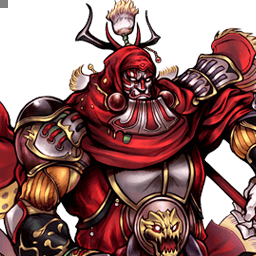

Final Fantasy V
Gilgamesh
Épéiste aérien aux huit armes aléatoires, d'Excalibur au break de Zantetsuken
Vue d'ensemble
Gilgamesh est un épéiste qui opère au corps à corps et à mi-distance. Il dégaine une arme aléatoire à chaque attaque d'épée, chacune portant des effets variés : longueur d'arme, dégâts et génération d'EX Force changent selon l'arme tirée — jusqu'au Iai Strike (Bravery Break) possible avec Zantetsuken. Le tout est soutenu par un répertoire aérien complet : Double Trouble est le poke rapide par excellence pour jouer sûr, Electrocute contrôle l'espace de loin, Whirlwind Slash comble les distances et lance des combos variés, et Hurricane conclut les combos ou surprend avec son startup fulgurant.
Ses forces tiennent à sa synergie avec les mécaniques du système et à ses attaques aériennes : il remplit jauges d'assist et d'EX à un rythme régulier par le jeu défensif et les combos Whirlwind Slash. Si la récompense varie selon l'arme, Gilgamesh profite toujours de l'EX : son potentiel de dégâts explose en EX Mode grâce à sa haute ATK de base, à Octo Break et à un EX Burst sans doute le plus fort du jeu.
Historiquement classé quelque part en mid tier — davantage une question de représentation compétitive qu'autre chose — il n'est pas omnipotent : son combat au sol est comparativement plus lent et risqué, et les tirages d'armes aléatoires peuvent produire de gros dégâts comme 1 dégât par hit, sans moyen de garantir un effet dans la plupart des cas. Ses attaques rapprochées sont très rapides mais ses attaques de mi-distance bien plus lentes et télégraphées : il choisit entre les deux, sans entre-deux, sauf à sacrifier son loadout aérien constant. Acculé, il a peu de potentiel de retournement en dehors des effets d'armes aléatoires, des reads à haut risque et du jeu défensif à long terme. Globalement bien équilibré dans la plupart des domaines importants du jeu, c'est un personnage compétent en compétitif.
Tier list 2017 (tournoi, dissidia.wiki) : B — 19ᵉ sur 30. Classé 19e (tier B) de la tier list 2017 ; l'overview le situe historiquement en mid tier, en précisant que ce classement tient plus à la représentation compétitive qu'autre chose.
Forces
- Combat aérien : combos solo, poke rapide, gap closer, HP attack éclair (Hurricane, 13F) et outils ranged — il performe dans la zone la plus disputée du jeu.
- Anti-zoning à mi-distance : Electrocute check très bien les adversaires à distance et récompense d'un combo sur hit.
- Armes aléatoires (le bon côté) : des effets extraordinaires — bravery break instantané, longueur d'arme, génération d'EX accrue — s'appliquent dès le tirage d'une des huit épées et peuvent renverser un match en un instant.
- EX Mode : l'un des EX Bursts les plus forts du jeu, qui, avec les huit épées brandies (Octo Break), augmente exponentiellement la récompense sur hit.
- Fast faller : à chaque air dodge, Gilgamesh est en moyenne plus difficile à toucher en sortie.
Faiblesses
- Combat au sol : vitesse de course lente, HP attacks moyennes et braveries ternes, qui pâlissent face à la solidité fondamentale de ses moves aériens.
- Armes aléatoires (le mauvais côté) : impossible de contrôler quelle épée sort — il peut devoir se battre avec des effets sous-optimaux au pire moment.
- Checkmates d'EX Revenge : avec un Missile aérien lent au startup et les autres HP à un coup limités au sol, surmonter les checkmates d'EX Revenge est difficile.
Stats & vitesses
| Nom | Gilgamesh (ギルガメッシュ) |
|---|---|
| Jeu d'origine | Final Fantasy V |
| ATK de base (LV100) | 111 (High) |
| DEF de base (LV100) | 111 (Average) |
| Vitesse de course | 10.5 (Very Slow) |
| Vitesse de dash | 77 (Average / Good) |
| Vitesse de chute | 67 (Fast) |
| Chute après esquive | 22 (Very Fast) |
| BRV la plus rapide | 11F (Dual Thrust, Double Trouble) |
| HP la plus rapide | 13F (Hurricane) |
| HP en 1 coup | Yes (Rocket Punch, Missile) |
| HP links | Yes (Combos only) |
| Command block | No |
| Armes | Axes, Daggers, Greatswords, Katanas,Parrying Weapons, Spears, Swords, Thrown Weapons |
| Armures | Chestplates, Gauntlets, Heavy Armor, Helms,Large Shields, Light Armor, Shields |
| Armes exclusives | Osafune, Kotetsu, Yoshiyuki |
| Camp | Chaos |
| Doubleur (JP) | Kazuya Nakai |
| Doubleur (ENG) | Keith Szarabajka |
Valeurs brutes du wiki (page personnage) — plus la valeur est basse, plus le personnage est rapide. Trait pointillé or : moyenne des 31 personnages.
Coups
Startup en frames (60 i/s, données dissidia.wiki). Couleur : Melee Low · Melee Mid · Melee High · Ranged.
Braveries
Au sol
Dual Thrust Melee Low
Fente et estoc au corps à corps : portée courte mais frappe rapide, son bravery le plus véloce au sol (11F) avec effet Chase. Annulable en attaque, block ou dodge. Attaque d'épée : soumise au tirage d'arme (162 d'EX Force avec Masamune contre 90 par défaut, dégâts réduits avec Masamune/Genji Blade).
| Default | Masamune / Genji Blade | |
|---|---|---|
| Dégâts de base | 20 (3, 3, 7, 7) | 14 (2, 2, 5, 5) |
| Startup | 11F | 11F |
| Type | Physical | Physical |
| Priorité | Melee Low | Melee Low |
| EX Force | 90 | 162 (Masamune) |
| Effets | Chase | Chase |
| Cancels | Attack, Block, Dodge | Attack, Block, Dodge |
| CP (maîtrisé) | 30 (15) |
Wind Slash Ranged Low
Projectiles de vent à longue portée, lents. Ranged Low, sans EX Force, annulable en dodge. L'un des quatre moves qui ne dégainent pas d'arme.
| Dégâts de base | 10 |
|---|---|
| Startup | 31F |
| Type | Magical |
| Priorité | Ranged Low |
| EX Force | 0 |
| Cancels | Dodge |
| CP (maîtrisé) | 30 (15) |
Cross Slash Melee Low
Taillade en croix au corps à corps avec Wall Rush, 21F. Attaque d'épée soumise au tirage (138 d'EX Force avec Masamune). C'est aussi son assist BRV au sol.
| Default | Masamune / Genji Blade | |
|---|---|---|
| Dégâts de base | 30 (3, 3, 4, 4, 8, 8) | 22 (2, 2, 3, 3, 6, 6) |
| Startup | 21F | 21F |
| Type | Physical | Physical |
| Priorité | Melee Low | Melee Low |
| EX Force | 30 | 138 (Masamune) |
| Effets | Wall Rush | Wall Rush |
| Cancels | Dodge | Dodge |
| CP (maîtrisé) | 30 (15) |
Whirlwind Slash Melee Low
Charge en toupie vers l'adversaire à mi-distance, verticalement limitée, avec Chase : d'après l'overview, ses combos remplissent les jauges d'assist et d'EX à un rythme régulier, et le move sert de gap closer et de départ de combos variés. Grosse EX Force (90, 162 avec Masamune) ; enchaîner sur le Chase conserve l'arme dégainée.
| Default | Masamune / Genji Blade | |
|---|---|---|
| Dégâts de base | 35 (6, 6, 11, 12) | 25 (4, 4, 8, 9) |
| Startup | 28F | 28F |
| Type | Physical | Physical |
| Priorité | Melee Low | Melee Low |
| EX Force | 90 | 162 (Masamune) |
| Effets | Chase | Chase |
| Cancels | Dodge | Dodge |
| CP (maîtrisé) | 30 (15) |
En l’air
Electrocute Ranged Low
Foudre abattue sur l'adversaire : un seul hit, mais longue portée et efficace à toute hauteur. Son outil d'anti-zoning à mi-distance, excellent pour checker à distance et récompensé d'un combo sur hit. Ne dégaine pas d'arme.
| Dégâts de base | 10 (4, 6) |
|---|---|
| Startup | 39F |
| Type | Magical |
| Priorité | Ranged Low |
| EX Force | 0 |
| Cancels | Dodge |
| CP (maîtrisé) | 30 (15) |
Double Trouble Melee Low
Balayage large au corps à corps, 11F, Wall Rush, annulable en attaque, block ou dodge : le poke rapide par excellence pour jouer sûr, cœur de son jeu aérien. Un miss enchaîné en Double Trouble, Whirlwind Slash, Hurricane ou Sword Dance conserve l'arme dégainée ; sur hit, Double Trouble > Hurricane est un combo notable au plafond.
| Default | Masamune / Genji Blade | |
|---|---|---|
| Dégâts de base | 20 (3, 3, 7, 7) | 14 (2, 2, 5, 5) |
| Startup | 11F | 11F |
| Type | Physical | Physical |
| Priorité | Melee Low | Melee Low |
| EX Force | 30 | 102 (Masamune) |
| Effets | Wall Rush | Wall Rush |
| Cancels | Attack, Block, Dodge | Attack, Block, Dodge |
| CP (maîtrisé) | 30 (15) |
Tsubamegaeshi Melee Low
Roulade avant suivie d'une taillade, efficace à toute hauteur, 21F, Wall Rush. Enchaîner un Double Trouble raté dessus fait disparaître l'arme et en dégaine une nouvelle. C'est aussi son assist BRV aérien.
| Default | Masamune / Genji Blade | |
|---|---|---|
| Dégâts de base | 30 (4, 4, 4, 6, 12) | 22 (3, 3, 3, 4, 9) |
| Startup | 21F | 21F |
| Type | Physical | Physical |
| Priorité | Melee Low | Melee Low |
| EX Force | 30 | 120 (Masamune) |
| Effets | Wall Rush | Wall Rush |
| Cancels | Dodge | Dodge |
| CP (maîtrisé) | 30 (15) |
Whirlwind Slash (midair) Melee Low
Identique à la version au sol : charge en toupie à mi-distance, verticalement limitée, Chase, 90/162 d'EX Force. Gap closer et moteur de ses combos aériens.
| Default | Masamune / Genji Blade | |
|---|---|---|
| Dégâts de base | 35 (6, 6, 11, 12) | 25 (4, 4, 8, 9) |
| Startup | 28F | 28F |
| Type | Physical | Physical |
| Priorité | Melee Low | Melee Low |
| EX Force | 90 | 162 |
| Effets | Chase | Chase |
| Cancels | Dodge | Dodge |
| CP (maîtrisé) | 30 (15) |
Attaques HP
Au sol
Rocket Punch Ranged High
Poing fusée tiré à grande vitesse à longue portée, Ranged High, Wall Rush, annulable en dodge. HP à un coup (avec Missile), au sol uniquement. Ne dégaine pas d'arme.
| Startup | 53F |
|---|---|
| Priorité | Ranged High |
| EX Force | 0 |
| Effets | Wall Rush |
| Cancels | Dodge |
| CP (maîtrisé) | 30 (15) |
Death Claw Melee High
Charge tranchante à mi-distance, verticalement limitée mais très précise, Melee High, 41F, Wall Rush. Attaque d'épée soumise au tirage. C'est aussi son assist HP au sol.
| Default | Masamune / Genji Blade | |
|---|---|---|
| Dégâts de base | 10 (5, 5) | 6 (3, 3) |
| Startup | 41F | 41F |
| Type | Physical | Physical |
| Priorité | Melee High | Melee High |
| EX Force | 30 | 66 (Masamune) |
| Effets | Wall Rush | Wall Rush |
| Cancels | Dodge | Dodge |
| CP (maîtrisé) | 30 (15) |
Jump Melee High
Saut puis fondre sur l'adversaire, déplaçable au stick analogique, Melee High, avec effet Dodge et 60 d'EX Force par hit. Dual Thrust raté peut s'enchaîner en Jump en conservant l'arme.
| Startup | 41F (peak) ~ 58F (land) |
|---|---|
| Priorité | Melee High |
| EX Force | 60 each hit |
| Effets | Dodge |
| Cancels | Dodge |
| CP (maîtrisé) | 30 (15) |
En l’air
Missile Ranged High
Missile à longue portée qui explose à l'impact, Ranged High, 45F, Wall Rush. HP à un coup, mais son startup lent est cité parmi les raisons de ses difficultés contre les checkmates d'EX Revenge. Ne dégaine pas d'arme.
| Startup | 45F |
|---|---|
| Priorité | Ranged High |
| EX Force | 0 |
| Effets | Wall Rush |
| Cancels | Dodge |
| CP (maîtrisé) | 30 (15) |
Hurricane Melee High
Cyclone créé en tournant sur lui-même au corps à corps : sa HP la plus rapide (13F), au startup fulgurant qui surprend et conclut les combos d'après l'overview. Attaque d'épée à très grosse EX Force (96, 180 avec Masamune) ; combote depuis Double Trouble au plafond en conservant l'arme. C'est aussi son assist HP aérien (avec Chase).
| Default | Masamune / Genji Blade | |
|---|---|---|
| Dégâts de base | 12 (2 x 6) | 6 (1 x 6) |
| Startup | 13F | 13F |
| Type | Physical | Physical |
| Priorité | Melee High | Melee High |
| EX Force | 96 | 180 (Masamune) |
| CP (maîtrisé) | 30 (15) |
Sword Dance Melee High
Taillades à grande vitesse à mi-distance, lentes (45F) mais efficaces à toute hauteur, Melee High, Wall Rush. Attaque d'épée soumise au tirage ; un Double Trouble (raté ou touché) peut s'enchaîner dessus en conservant l'arme.
| Default | Masamune / Genji Blade | |
|---|---|---|
| Dégâts de base | 10 (1, 1, 2 x 4) | 6 (1 x 6) |
| Startup | 45F | 45F |
| Type | Physical | Physical |
| Priorité | Melee High | Melee High |
| EX Force | 30 | 138 (Masamune) |
| Effets | Wall Rush | Wall Rush |
| Cancels | Dodge | Dodge |
| CP (maîtrisé) | 30 (15) |
EX Mode: Gilgamesh Morphing Time! & EX Burst
EX Mode « Gilgamesh Morphing Time! » — effets : Regen, Critical Boost et Octo Break.
Octo Break (toujours actif en EX Mode) : Gilgamesh brandit une arme dans chacun de ses huit bras, la composition n'étant connue qu'à l'entrée en EX Mode. D'après l'overview, son potentiel de dégâts explose alors, porté par sa haute ATK de base, Octo Break et son EX Burst — Gilgamesh profite toujours de l'EX, quelle que soit la variance des armes.
EX Burst : The Greatest Sword : une rafale d'attaques avec « la plus grande épée jamais connue ». Sélectionnez Excalibur pour infliger de gros dégâts (la seconde partie du Burst est exécutée deux fois grâce à Excalibur)... et Excalipoor pour le résultat inverse. Considéré par l'overview comme sans doute le plus fort EX Burst du jeu.
Mécanique unique
Weapon Draw : Gilgamesh dégaine l'une de huit armes à chaque attaque de mêlée, tirée au hasard selon des probabilités fixes. Chaque arme a des traits uniques — longueur, déplétion de jauge EX, dégâts de base différents. Aucune arme n'est dégainée sur Wind Slash, Electrocute, Rocket Punch et Missile.
Les multiplicateurs d'armes affectent les dégâts de base de l'attaque, pas les dégâts finaux : c'est l'une des rares mécaniques du jeu à modifier les dégâts de base, donc tout scale avec le build (ATK élevée, etc.).
- Excalibur (10 %, allonge x1.0) : double les dégâts de chaque hit. Excalipoor (10 %, allonge x1.0) : 1 dégât par hit.
- Genji Blade (10 %, allonge x1.0) : déplétion de jauge EX adverse, dégâts réduits (x0.75, arrondi à l'entier inférieur, minimum 1). Zantetsuken (10 %, allonge courte) : 2 % de chance d'infliger un bravery break — sans gain de bravery de stage — pour des dégâts normaux.
- Naginata (15 %, allonge x1.5) : la plus longue portée, dégâts normaux. Masamune (15 %, allonge x1.3) : longue portée, produit plus d'EX Force sur hit, dégâts réduits (x0.75).
- Battle Axe (15 %, allonge x0.7) : dégâts aléatoires à chaque hit (x0.25 ou x1.75). Chicken Knife (15 %, allonge x0.7) : dégâts croissants à mesure que la vie de Gilgamesh baisse, de x1.0 (100-91 % de vie) à x2.77 (10 % et moins).
- Rétention d'arme : l'arme disparaît si Gilgamesh dodge, bloque, se fait toucher ou que le Chase se termine ; elle reste s'il initie un Chase ou enchaîne une attaque ratée dans une autre (ex. Double Trouble > Double Trouble). Séquences qui conservent l'arme : Whirlwind Slash > Chase ; Double Trouble (raté/touché) > Hurricane ou Sword Dance ; Double Trouble (raté) > Double Trouble ou Whirlwind Slash ; Dual Thrust (raté) > Dual Thrust, Whirlwind Slash ou Jump. Séquences qui la font disparaître (nouveau tirage) : Double Trouble (raté) > Tsubamegaeshi ; Dual Thrust (raté) > Cross Slash ou Death Claw.
- En EX Revenge, Gilgamesh peut enchaîner ses attaques entre elles ; l'arme reste ou disparaît selon le move enchaîné (elle reste sur les chaînes Whirlwind Slash / Double Trouble / Dual Thrust vers Double Trouble, Whirlwind Slash, Hurricane, Sword Dance ou Jump ; elle disparaît sur Dual Thrust > Cross Slash ou Death Claw, Cross Slash > Cross Slash et Tsubamegaeshi > Tsubamegaeshi).
| Weapon | Drawing probability | Reach | Damage multiplier | Effect |
|---|---|---|---|---|
| Excalibur | 10 % | 1.0 | x1.0 | Double damage with each hit. |
| Excalipoor | 10 % | 1.0 | x1.0 | 1 damage with each hit. |
| Genji Blade | 10 % | 1.0 | x0.75, round down to nearest integer, minimum = 1. | EX gauge depletion, weaker damage. |
| Zantetsuken | 10 % | 0.7 % | x1.0 | 2 % chance to inflict bravery break. Won't gain stage bravery with break. Normal damage. |
| Naginata | 15 % | 1.5 | x1.0 | Longest reach. Normal damage. |
| Masamune | 15 % | 1.3 | x0.75, round down to nearest integer, minimum = 1. | Long reach. Produce more EX force on hit, weaker damage. |
| Battle Axe | 15 % | 0.7 | Random (x0.25 OR x1.75. Round down, min=1.) | Short reach, random damage on each hit. |
| Chicken Knife | 15 % | 0.7 | x1.0 - x2.77 (Scales with health. See table below.) | Short reach, increased damage at lower health. |
| Remaining Health | Multiplier |
|---|---|
| 100 - 91 % | x1.0 |
| 90 - 81 % | x1.12 |
| 80 - 71 % | x1.25 |
| 70 - 61 % | x1.40 |
| 60 - 51 % | x1.57 |
| 50 - 41 % | x1.76 |
| 40 - 31 % | x1.97 |
| 30 - 21 % | x2.21 |
| 20 - 11 % | x2.48 |
| 10 % and below | x2.77 |
| Weapon Remains | Weapon Vanishes, New Weapon Draw |
|---|---|
| Whirlwind Slash (ground or midair) > Chase Double Trouble (miss / hit) > Hurricane Double Trouble (miss) > Double Trouble Double Trouble (miss) > Whirlwind Slash Double Trouble (miss / hit) > Sword Dance Dual Thrust (miss) > Dual Thrust Dual Thrust (miss) > Whirlwind Slash Dual Thrust (miss) > Jump | Double Trouble (miss) > Tsubamegaeshi Dual Thrust (miss) > Cross Slash Dual Thrust (miss) > Death Claw |
| During EX Revenge | |
| Whirlwind Slash (ground / midair, finish) > Whirlwind Slash Whirlwind Slash (finish) > Double Trouble Whirlwind Slash (finish) > Hurricane / Sword Dance Double Trouble (finish) > Double Trouble Double Trouble (finish) > Whirlwind Slash Double Trouble (finish) > Hurricane / Sword Dance Dual Thrust (finish) > Dual Thrust Dual Thrust (finish) > Whirlwind Slash Dual Thrust (finish) > Jump | Dual Thrust (finish) > Cross Slash Dual Thrust (finish) > Death Claw Cross Slash (finish) > Cross Slash Tsubamegaeshi (finish) > Tsubamegaeshi |
Plan de jeu & techniques avancées
Le jeu de Gilgamesh se déroule en l'air, la zone la plus disputée du jeu, où son répertoire est complet : Double Trouble comme poke rapide et sûr (11F, annulable en attaque, block ou dodge), Electrocute pour checker à distance et punir d'un combo sur hit, Whirlwind Slash comme gap closer et départ de combos, Hurricane (13F) pour conclure les combos ou surprendre. Le jeu défensif et les combos Whirlwind Slash remplissent jauges d'assist et d'EX à un rythme régulier, et son statut de fast faller rend ses air dodges plus difficiles à punir.
La gestion du tirage d'armes fait partie du plan : chaque attaque de mêlée dégaine une épée aléatoire, et la conserver ou la re-tirer se pilote par les enchaînements — initier un Chase ou chaîner une attaque ratée dans la bonne attaque conserve l'arme (garder une Excalibur), tandis qu'enchaîner vers Tsubamegaeshi, Cross Slash ou Death Claw force un nouveau tirage (se débarrasser d'une Excalipoor). Il n'existe cependant aucun moyen de garantir un effet dans la plupart des cas : la récompense sur hit reste variable.
Gilgamesh profite toujours de l'EX : haute ATK de base, Octo Break et un EX Burst parmi les plus forts du jeu font exploser son potentiel de dégâts en EX Mode. Au sol en revanche, il est plus lent et plus risqué — course très lente, braveries ternes — et il n'a rien entre ses attaques rapprochées très rapides et ses moves de mi-distance lents et télégraphés. Acculé, ses seules ressources sont les effets d'armes aléatoires, les reads à haut risque et le jeu défensif à long terme ; face à un EX Revenge, ses HP à un coup (Rocket Punch et Missile) sont respectivement limité au sol et lent au startup.
Techniques spécifiques
Weapon retention
Contrôler la persistance de l'arme dégainée : initier un Chase (Whirlwind Slash > Chase) ou chaîner une attaque ratée dans une attaque compatible (Double Trouble > Double Trouble, Dual Thrust > Jump...) conserve l'arme ; enchaîner vers Tsubamegaeshi, Cross Slash ou Death Claw la fait disparaître et force un nouveau tirage. En EX Revenge, les chaînes d'attaques suivent les mêmes règles selon le move enchaîné.
Double Trouble > Hurricane (plafond)
Enchaînement notable car il combote au plafond sur hit, tout en conservant l'arme dégainée (il fonctionne aussi sur un miss pour garder l'arme).
Techniques universelles (blodge, dash feint, lock off, dodge punishment) : voir la page Techniques & glitches.
Matchups
Vidéos de matchs : Replay Theater — matchs de Gilgamesh.
Builds
Les données ne contiennent qu'un build détaillé, « Hybrid (EX) », cohérent avec l'overview : Gilgamesh profite toujours de l'EX, son potentiel de dégâts explosant en EX Mode. Le build (450 CP, Equip Glitch supposé) : 10299 HP, 996 BRV, 179 ATK, 182 DEF, 60 LUK, booster max x3.5 ; assist Kuja, summon Rubicante ; Heaven's Cloud, Lufenian Dirk, Lufenian Headband et Lufenian Vest pour l'effet spécial Seal of Lufenia ; accessoires : Muscle Belt, Dismay Shock, Summon Unused, Pre-EX Mode, Pre-EX Revenge, Aerial, White Gem, Tenacious Attacker, Glutton, First to Victory.
Substitution documentée : si vous n'utilisez pas les combos solo de Gilgamesh, Muscle Belt peut être remplacé par Battle Hammer ou Large Gap in HP.
| Stats | |
|---|---|
| HP | 10299 |
| CP | 450 |
| BRV | 996 |
| ATK | 179 |
| DEF | 182 |
| LUK | 60 |
| Max Booster | x3.5 |
| Equipment | |
|---|---|
| Assist | Kuja |
| Weapon <img></img> | Heaven's Cloud |
| Hand <img></img> | Lufenian Dirk |
| Head <img></img> | Lufenian Headband <img></img> |
| Body <img></img> | Lufenian Vest |
| Accessory 1 | <img></img> Muscle Belt |
| Accessory 2 | <img></img> Dismay Shock |
| Accessory 3 | <img></img> Summon Unused |
| Accessory 4 | <img></img> Pre-EX Mode |
| Accessory 5 | <img></img> Pre-EX Revenge |
| Accessory 6 | <img></img> Aerial |
| Accessory 7 | <img></img> White Gem |
| Accessory 8 | <img></img> Tenacious Attacker |
| Accessory 9 | <img></img> Glutton |
| Accessory 10 | <img></img> First to Victory |
| Summon <img></img> | Rubicante |
| Bravery attacks | |
|---|---|
| Ground | Aerial |
| HP attacks | |
| Ground | Aerial |
| Equipment | Replacement | Notes |
|---|---|---|
| <img></img> Muscle Belt | <img></img> Battle Hammer / <img></img> Large Gap in HP | If you're not using Gilgamesh's solo combos, these are good replacements. |
| Stats | |
|---|---|
| HP | |
| CP | |
| BRV | |
| ATK | |
| DEF | |
| LUK | |
| Max Booster |
| Equipment | |
|---|---|
| Assist | |
| Weapon <img></img> | |
| Hand <img></img> | |
| Head <img></img> | |
| Body <img></img> | |
| Accessory 1 | |
| Accessory 2 | |
| Accessory 3 | |
| Accessory 4 | |
| Accessory 5 | |
| Accessory 6 | |
| Accessory 7 | |
| Accessory 8 | |
| Accessory 9 | |
| Accessory 10 | |
| Summon <img></img> |
| Bravery attacks | |
|---|---|
| Ground | Aerial |
| HP attacks | |
| Ground | Aerial |
Le second emplacement de build (« build 2 ») est vide, les coups équipés du build ne sont pas renseignés, et aucune prose de philosophie n'accompagne les tableaux.
Synergies d'assist
Gilgamesh en tant qu'assist
En tant qu'assist (tier Mid de la tier list assist), Gilgamesh ne dégaine qu'Excalibur ou Excalipoor, à 50 % chacune : Excalibur double le multiplicateur de dégâts des attaques et renforce le drain de jauge EX adverse ; Excalipoor réduit tous les hits à 1 dégât et génère de l'EX pour l'adversaire. La récompense de chaque appel est donc un pile ou face.
Ses attaques d'assist : Cross Slash en BRV au sol (21F, Wall Rush, 30 de dégâts avec Excalibur contre 6 avec Excalipoor), Tsubamegaeshi en BRV aérien (21F, Wall Rush, 60 contre 5), Death Claw en HP au sol (41F, Wall Rush) et Hurricane en HP aérien (13F, Chase).
Assists recommandées
- Kuja — L'assist équipé du build Hybrid (EX) documenté. La section synergies se limite sinon à une phrase : Gilgamesh fonctionne bien avec la plupart des assists viables en tournoi.
Tech communautaire
Sources
- https://dissidia.wiki/Gilgamesh_(Dissidia_012)
- https://dissidia.wiki/Tier_List_(Dissidia_012)
- https://dissidia.wiki/Tier_List_(Assist)
Limites connues
- Aucune note d'usage par coup dans les sources : moveNotes est synthétisé à partir des descriptions officielles, des données de frames et des mentions de l'overview et de la mécanique unique.
- Page matchups dédiée non documentée (stub) et aucun matchup nommé dans l'overview : champ matchups à null.
- Section combos non documentée : aucun combo détaillé (seul l'enchaînement Double Trouble > Hurricane au plafond est mentionné via la rétention d'armes).
- Builds : un seul build (Hybrid (EX)) sans philosophie rédigée ni coups équipés ; le second emplacement de build est vide.
- Synergies d'assist réduites à une phrase générique (aucun assist recommandé nommément hors le Kuja du build).
- Aucune référence externe (section References vide) : pas de communityTech attribuable.
- Valeurs d'assist gain des coups non renseignées ; le texte de l'EX Burst est tronqué dans la source (« Select Excalipoor to... ») et l'effet exact d'Excalipoor dans le Burst n'y est pas explicité.